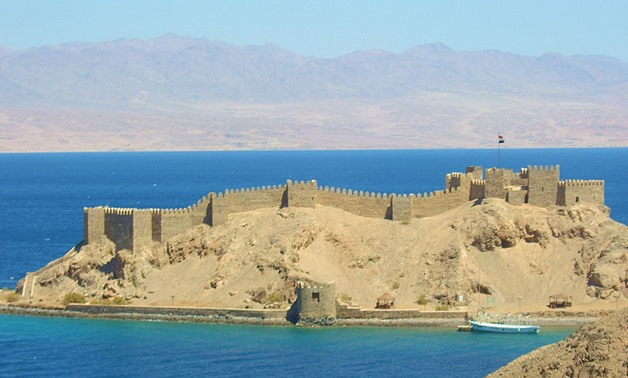
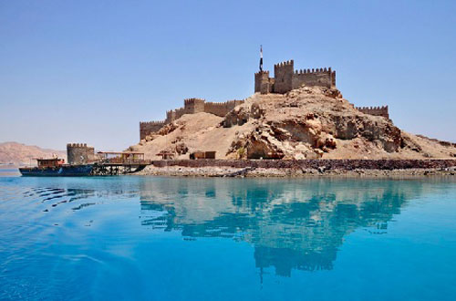

“Happiness depends upon ourselves.” – Madelyn Teppner
South Sinai
Pharaoh’s Island in Egypt.

Pharaoh’s Island in Egypt
Pharaoh’s Island is the name of an islet located north of
the Gulf of Aqaba, on the eastern coast of the Sinai Peninsula,
Egypt. it called The picturesque Pharaoh’s Island because
it was first occupied during the reign of Ramses III, was also
called “Coral Island”. It is located in the Red Sea, in the
northwest corner of the Gulf of Aqaba, 11 km south of Eilat, near
the eastern coast of the Sinai Peninsula. Very small in size
(approximately 300 m long and 100 m wide), it is formed by two
large rocks that protrude some twenty meters above sea level,
interconnected by a third rock, which is smaller than the previous
two. Surrounded by fabulous reefs, Pharaoh’s Island (known
as Coral Island by Israelis) is very popular with divers. The
island is just 250 m (820 ft) from the shore, close to the border
with Israel, and boats leave from the Salah ad-Din Hotel on the
coastal road opposite the island. Worth exploring is the restored
ruins of a 12th-century Crusader castle, strategically placed to
ensure the safety of pilgrims to the Holy Land. The castle was
captured by Salah ad-Din in 1170 and used as an Arab stronghold
against the Crusaders until 1183 when it was eventually abandoned.
Meet the castle of Saladin on Pharaoh’s Island in Taba
Moreover, the citadel of Saladin has a spectacular view of four of
the most important countries: Egypt, occupied Palestine, Jordan,
and Saudi Arabia, Surrounded by blue, clean and calm water from
all sides. Also, its located in the narrowest point in the Gulf of
Aqaba can be easily defended, in addition to being Covetous by the
invaders before the coming of the Crusaders until now, the
construction of the castle dates back to Baldwin I, who was King
of Jerusalem in 1116 AD, who built this castle and choose its
distinctive location which in a vast commercial road between the
Far East and Europe, because it is located on a high ground,
During the period of the Crusaders, this fortress was used to
collect taxes from Arab merchants to attack Arab ships, as well as
to protect pilgrims traveling between Jerusalem and the monastery
of St. Catherine.
The Pharaoh’s Island today
The tourist interest of the island itself is very limited,
compared to the many archaeological sites of cultural attraction
that Egypt offers as a whole. However, its immediate surroundings
are attractive, especially for lovers of diving and observation of
aquatic fauna, including the Picasso crossbow fish, or coral
reefs. Because around the island, you can see remains of
foundations from the Hellenistic and Byzantine periods show that
the Pharaoh’s Island was a very frequented route. The other
advantage of this tour is the possibility of diving or snorkeling
away from the crowds in transparent waters.

Pharaoh’s Island in Egypt
Or just swimming and relaxing. ” An example was given by one
Thomas Edward Lawrence, later known as Lawrence of Arabia During
an intelligence mission on the Sinai Peninsula in 1914, he asked
for permission to visit the island and its ruins. After having
built a makeshift raft to the island, with his Bedouin guide
recounting this episode, “Lawrence seems to have been fascinated
by the adventure of the episode as well as by the evocative ruins
of the island itself.
Restoration work on the Pharaoh’s Island
The trying of the Egyptian tourism authorities to promote to
Pharaoh’s Island, However, the ruins in question lead us to
a story of a rich past evoked in very broad strokes. This is what
the Egyptian tourism authorities are trying to promote, through
the restoration work recently carried out on the Citadel, as well
as a proposal submitted to UNESCO, for its inscription on the
World Heritage List. Compared to the Citadel of Cairo, this
island, although adorned with the aura also of Salah el-Din is
“minuscule”. But this “tourist pearl in Sinai,” and “architectural
jewel.
The notion that the great artist requires a great patron has
been around since the Pharaohs. That the born patron also needs
an artist to patronize is a less-studied phenomenon.
~Shana Alexander
Saint Catherine's Monastery
Saint Catherine's in Egypt
The
Tourism and Antiquities Ministry has begun renovating the western
part of the Saint Catherine Monastery’s Library alongside
restoring the monastery’s church buildings, the Director-General
of Research, Archaeological Studies and Academic publication in
South Sinai Abdel Rahim Rihan announced Saturday. The library
ranks second next to the Vatican Library in terms of historically
important manuscripts, according to Rihan, as it 4,500
manuscripts. The ministry has already renovated the monastery’s
Saint Stephen and Saint John churches, with plans in place to
establish an automatic extinguishing and fire warning system.
Rihan added that restoration work for the library’s eastern
segment has already been finalized, with the manuscripts having
been re-indexed and the library halls reorganized, with means of
protection provided for the manuscripts as well.
The renovation work does not include the al-Wadi al-Moqads (Sacred
Valley) site or the natural reserve, Rihan said. He assured that
the monastery will never construct in these areas in order to
maintain their sanctity. The Tourism Ministry will install a
lighting system, remove electrical poles starting from the
monastery’s chain door to its entrance, and establish a security
gate to check bags and individuals alongside a security control
room and surveillance cameras. The ministry is also preserving
natural landscapes such as the Moses Mountain, the Monastery
Garden, six historical wells and the Springs of Moses.
Saint Catherine's in Egypt
Catherine
of Alexandria was a Christian martyr sentenced to death on the
breaking wheel. When this failed to kill her, she was beheaded.
According to tradition, angels took her remains to Mount Sinai.
Around 800 AD, monks found her remains and built the monastery.